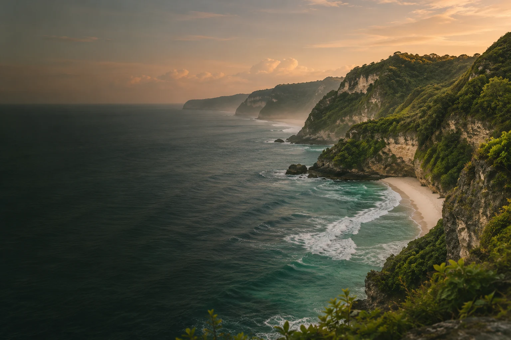

10 → 11 ОКТЯБРЯ
Прилетаете в 23:55
MU5029 · DPS. Паспортный контроль, багаж и автомобильный трансфер — после посадки. На виллу приедете уже 11 октября.
Согласовать ночное заселение и сохранение брони от 10 октября.От пляжей Букита до рисовых террас, Пениды и рассвета в Ловине.
Выбрать день Ваша база · Nunamkhalu, Кутух
Все 29 мест и 72 точки питания распределены по дням. Три основных приёма пищи ежедневно плюс кофе, десерты и перекусы. Подъезды включены в карты. Часы части заведений, боксы, катера и подачу еды в Echo Beach ещё нужно подтвердить.
Загружаем дни…
Дороги · OpenFreeMap / OpenMapTiles / © OpenStreetMap. Маршруты · OSRM. Спутник · Sentinel-2 cloudless 2024 / EOX. Морские участки указаны в расписании.
MU5029 · DPS. Паспортный контроль, багаж и автомобильный трансфер — после посадки. На виллу приедете уже 11 октября.
Согласовать ночное заселение и сохранение брони от 10 октября.Вылет MU890 — 00:30 23 октября. 22 октября: checkout предварительно до 12:00, местная программа, получение багажа, возврат байка и отдельный трансфер.
Хранение багажа, душ и поздний выезд пока не подтверждены.Все 72 точки назначены по одному разу. 36 основных приёмов пищи, 43 остановки на кофе, десерт или перекус; 7 основных приёмов — заранее полученные боксы. В Echo Beach возможность заказа еды не подтверждена.
Посмотреть все рестораны ↗Картинки — сгенерированные иллюстрации. Географические карты и дорожные линии получены отдельно. Проверка источников: 9 октября 2026; состав списков — локальный снимок 6 октября.
Иллюстрированная PDF-версия содержит расписания и встроенные статические карты. Статусы уточнений сохранены.
Скачать PDF ↓Данные маршрута · JSON